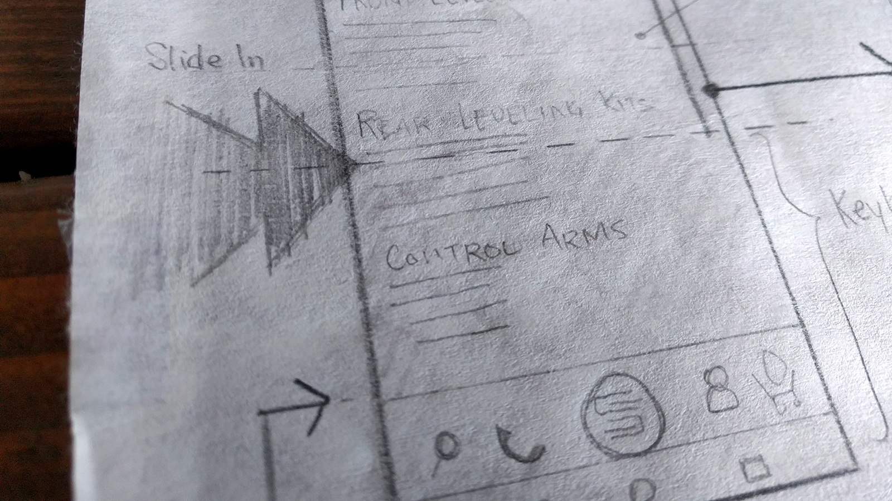
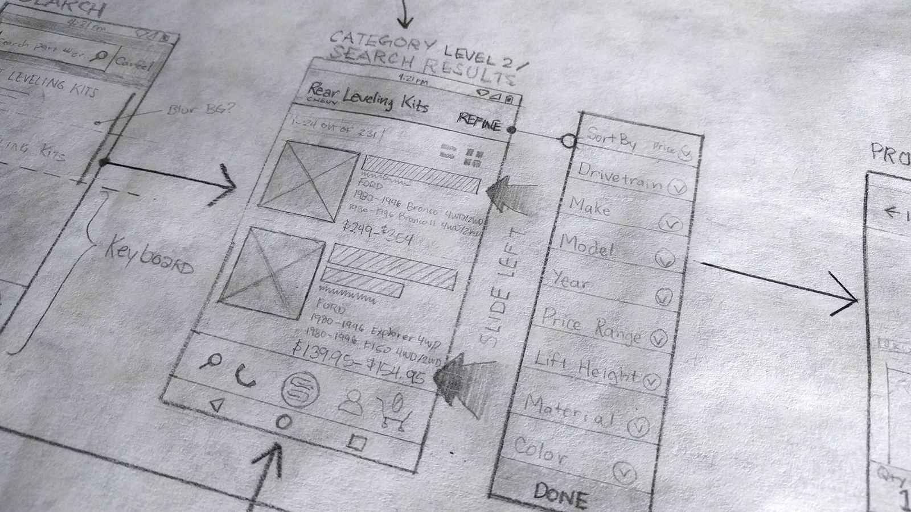
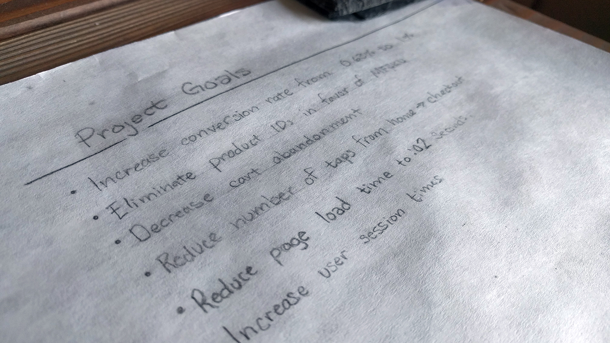

Solution:
Using a 3-part collaborative process known as CORE we discovered the brand's attributes, defined our users and set actionable goals. We set out to design solutions for two consistent problems:
1. Reduce Confusion with Unified Brand Look
2. Optimize Website for Conversions

Understanding the Problem
We decided to migrate the shop from Wordpress to Shopify in order to take advantage of the platform's speed, reliability and reletively painless product management system.
Users having trouble finding what they came for at various stages of the shopping experience was a conclusion of the Google Analytics data. The culprit: too many clicks causing users to fall off in droves. Studying heatmap patterns revealed the most preferred method of search—the year/make/model applet—was abscured or hidden in most pages which caused users to click more; confirming the Google Analytics data.
- 

- 
- 
Wireframe Sketch
Wireframes were sketched to reduce the number of clicks from any point of the website down to 3—with most being achievable in 2. Remaining clicks were designed to guide users into categories of parts compatible with their vehicles.
The underperforming homepage slider was replaced with a Make, Model, Year applet to help users quickly find something that fits their truck. SKU system was cleaned up and product data was broken up into more easily consumable chunks helping users easily skim through a catalog of over 1,400 unique SKUs.
Digital Wireframe
After content and flow was figured out layout work began.
Animated Prototypes
To help explain to the client and inform development how the website is supposed to function.